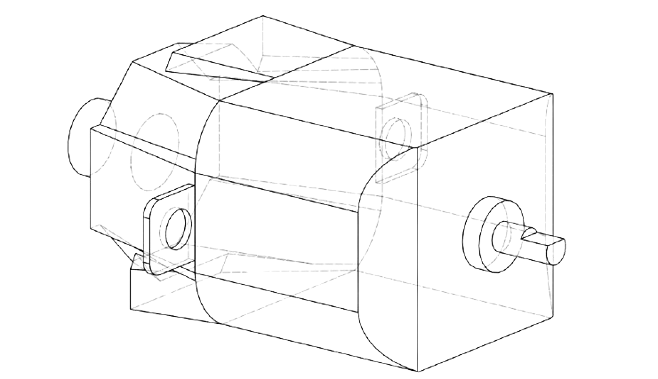
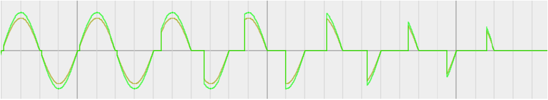

- Celá konstrukce je převážně z plastových částí vytištěných na 3D tiskárně a
kovového spojovacího materiálu
- Šedý materiál, z kterého jsou všechny viditelné části je čistě PETG od
společnosti Nebula. Na tento projekt byly spotřebovány necelé 3 špulky
tohoto filamentu, tedy necelá 3 kila.
- Těsnění, která jsou použita mezi spoji komponentů tunelu jsou vytištěna z
materiálu TPU, přesněji Flex 506 od společnosti 3D Fox
- Pevnou konstrukcí tunelu se myslí celá hlavní část kde je připevněn motor s
turbínou, tak i koleje jenž drží pohyblivou část tunelu. Nezapočítávám zde
ovládací panel.
- Hlavní konstrukce se skládá primárně z 7 pevných částí, 5 těsnění a
spojovacím materiálem. Je přichycena k pevné podložce dvěma podstavci,
které jsou navrženy tak, aby se daly přidělat na kovovou mříž, přidělenou k
tomuto projektu. Rozměry mříže jsou zobrazeny na obrázku č. 2. Rozteč
středů drážek pro uchycení je tedy 108 mm. Drážka je o šířce 7mm určena
pro šrouby M6 s určitou vůlí pro dorovnání nerovností. Každá podstava je
tedy k mříži připevněna čtyřmi M6 šrouby stejnětak samotná konstrukce k
podstavě.
V místech, kde je tunel přidělán k podstavám, jsou použity “redukce
průměru”. To je tam z toho důvodu, že středová část tunelu je provedena
průhlednou trubkou s určitým vnitřním průměrem. Tento průměr 93 mm
máme jako standardní hodnotu pro šířku tunelu. Avšak v místě, kde je
umístěn motor, je vnitřní průměr rozšířen, jelikož je motor sám o sobě dost
velký, a tak by blokoval průchodu vzduchu v tunelu. Na druhé straně je
zase redukce umístěna čistě z důvodu, aby tunel mohl nabírat více vzduchu
než se dostane k motoru a vrtuli.
- Části jsou k sobě připevněny vždy desíti M6 šrouby rozmístěnými
symetricky kolem dokola tunelu. Mezi všemi částmi jsou umístěna 1 mm
široká těsnění, také vlastnoručně vytištěná na míru.
- Na středové části je ještě umístěn štítek se základními informacemi.
- Kolejová část konstrukce slouží pro upevnění pohyblivých částí a jejich
možnost manipulace. Jedná se o 2 na sebe navazující konstrukce
připevněných k mříži každá čtyřmi šrouby, viz obr. č. 3. Tyto koleje jsou
udělány pro vlastnoručně vytištěná lineární ložiska.
- Ještě se zde nachází 2 jednoduché komponenty které připevňují
pohyblivou konstrukci na jedno dané místo, aby se při měření nemohla
nikam hnout.
- Celá pohyblivá část se skládá primárně z ložisek, spojovací konstrukce
ložisek, hlavní tunelové části pohyblivé konstrukce, upevňovací příruba pro
transparentní trubku a upevnění měřící části anemometru.
- Ložiska jsou 4 a jedná se o ložiska ze stránky thingiverse.com s názvem
“Square Rail Linear Ball Bearing” od 3DPRINTINGWORLD. Tyto ložiska
používají 4,5 mm kovové broky pro vlastní pohyb. Každé ložisko jich
potřebuje 40. Se spojovací konstrukcí jsou ložiska spojeny přes M4 šrouby a
to tak, že v ložiscích jsou zataveny závitové vložky M4.
- Vrchní část tunelu je k této konstrukci přidělána opět čtyřmi M6 šrouby.
Stejně jako u pevné konstrukce i zde jsou vrchní části tunelu k sobě
připevněny přes těsnění deseti M6 šrouby. Průhledná trubka je přidělána k
této konstrukci čistě přesným vytištěním a vtlačením do upevňovací
konstrukce. A na konci se nachází tedy anemometr. Toto upevnění je
adaptováno tak, aby veškerý vzduch procházel měřícím přístrojem. Je
možné že se tento uchytávací mechanismus změní.
- Motor, který je použit v tomto projektu, je typ univerzálního motoru. Tento motor je především určen na střídavé napětí 230 V a 50 Hz. Při připojení do sítě motor odebírá 0,5 A. To znamená že odebírá zdánlivý výkon 115 VA a když počítáme cos φ = 0,7, odebírá činný výkon 80,5 W. Všechny hodnoty při běhu na maximální výkon
- Regulace otáček motoru je provedena jednoduše změnou efektivní hodnoty napětí. Toto si můžeme dovolit, protože se jedná o univerzální motor a ne třeba asynchronní. Je zde použit jednoduchý obvod, tzv. dimmer.
- Tento obvod funguje tak, že “osekává” sinusový průběh napětí a proudu a tím se zmenšuje právě efektivní hodnota. Tento jev zařizuje součástka jménem triak. Výstupní napětí pak tedy vypadá jako na obr. č. 7. Na začátku vlevo je vidět výstup při nulovém odporu na potenciometru, tedy průběh sinusového napětí se nijak nemění. Na druhé straně je potenciometr na svém maximu 500 kΩ a obvod nepropouští žádný proud. Mezi tím je vidět jak se výstup chová při odporu potenciometru mezi těmito dvěma hodnotami.
- Přístroj, kterým měřím průtok vzduchu v tunelu, je Thermo-Anemometer.
Model TL-A2 od společnosti FIXKIT. Jedna z důležitých informací je, že
maximální rychlost měřitelná tímto anemometrem je 30 m/s. Až samotné
měření odhalí zda navržené vrtule dosáhnou této rychlosti a budu muset
změnit způsob měření
- Touto změnou myslím to, že momentálně všechen vzduch je proháněn
měřící částí, ale pokud dosáhneme tohoto limitu, změním konstrukci tak,
aby vzduch nevycházel jen přes anemometr. Přeci Jen tento přístroj není
navržen tak, aby byl součástí nějakého měřeného potrubí ale byl do něj
vložen když už tak částečně.